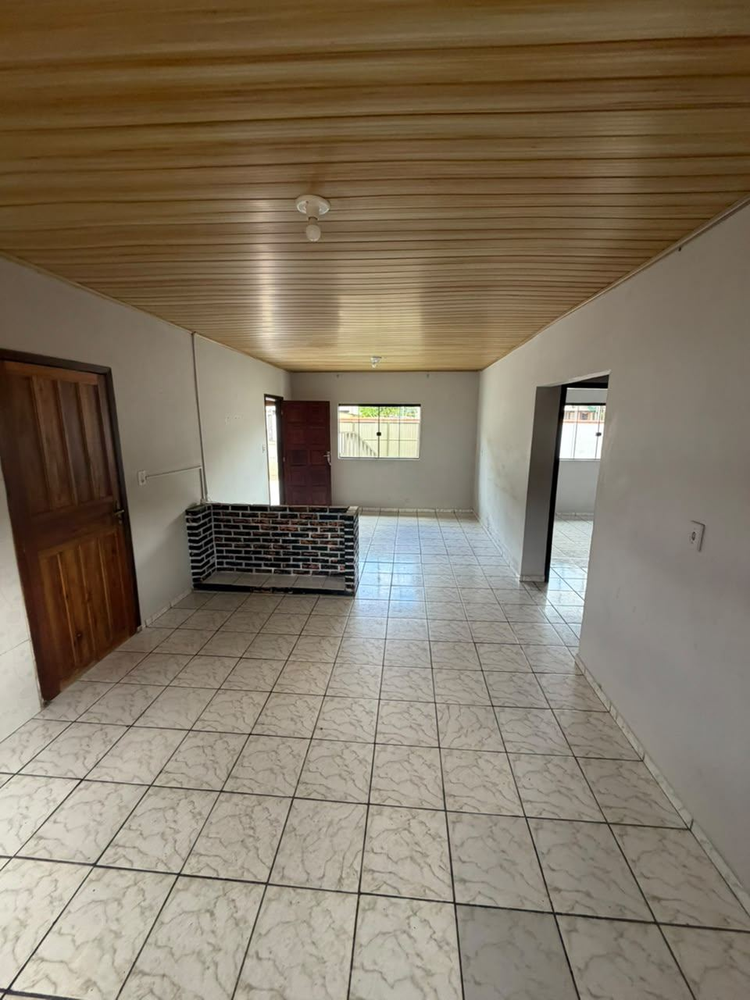

Selecione uma miniatura para ver outra foto.
ANUBIS IMÓVEIS · CORUPÁ/SC
DISPONÍVELCasa Esquina
Corupá, SC · Ano bom
R$ 1.800/mês
2 quarto(s)1 banheiro(s)
2 Quartos & 1 Banheiro , Sala e cozinha Conjugada
Casa aconchegante , em frente a creche . a 3 Minutos do centro
Consultar este imóvel pelo WhatsApp ↗